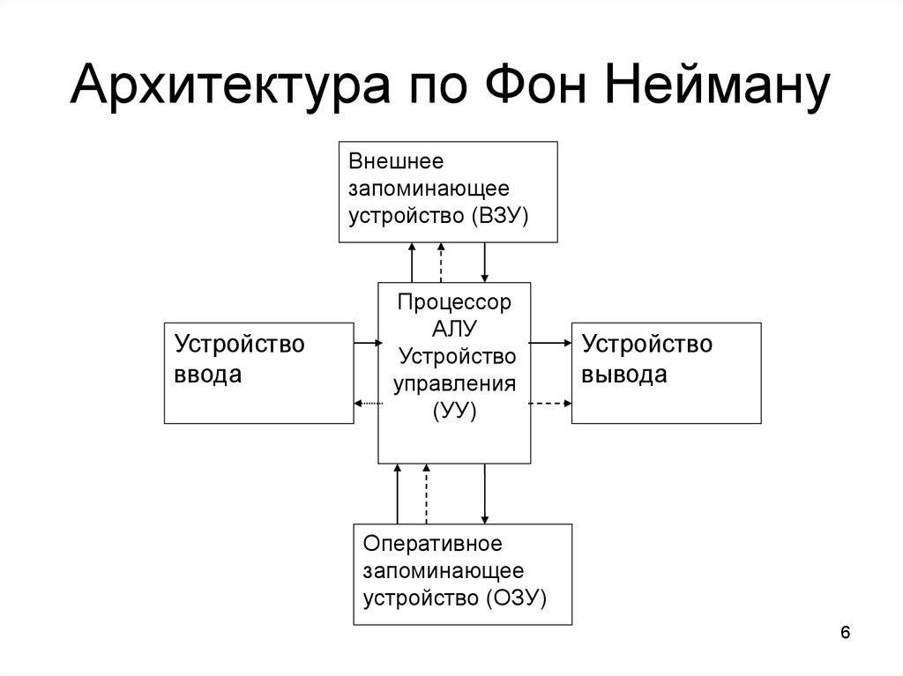

Процессор
Процессор - это электронный блок либо интегральная схема, исполняющая машинные инструкции (код программ), главная часть аппаратного обеспечения компьютера или программируемого логического контроллера. Иногда называют микропроцессором или просто процессором.

Архитектура процессора — количественная составляющая компонентов микроархитектуры вычислительной машины (процессора компьютера) (например, регистр флагов или регистры процессора), рассматриваемая IT-специалистами в аспекте прикладной деятельности.

Разрядность шины данных
Разрядность шины данных определяется разрядностью процессора, т.е. количеством двоичных разрядов, которые процессор обрабатывает за один такт. Разрядность процессоров постоянно увеличивалась по мере развития компьютерной техники.За 25 лет, со времени создания первого персонального компьютера (1975г.), разрядность шины данных увеличилась с 8 до 64 бит.
К основным режимам работы процессора с использованием шины передачи данных можно отнести следующие: запись/чтение данных из оперативной памяти и из внешних запоминающих устройств, чтение данных с устройств ввода, пересылка данных на устройства вывода.